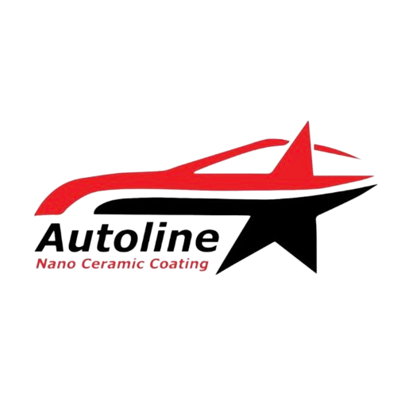

About The Company
AUTOLINE NANO CERAMIC COATING

Backgound
Autoline was founded on March 5, 2023 by Mrs. Atin Nurriya with the intention of developing automotive in the form of nano ceramic coating, glass protection, rust protection,
sound protection, paint protection, detailing, salon, and car wash. Aims to take care of cars as we take care ourselves. Appreciate our car as we need it!
Visi dan Misi
1. Vision : To be a strategic and trusted business partner in the field of transportation services that always focuses on improving services, and is always oriented towards customer satisfaction.
2. Mision : Provide quality products and services at competitive prices for our customers to meet their evolving needs. Provide more value for customers with consistent quality services together with customers and employees,
building a sustainable business.
Location
JL. BKR No 23b lingkar selatan rt 05 rw 02, Kota Bandung, Jawabarat.